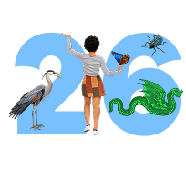
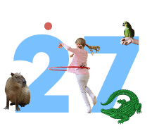

Sign-up date
| Mo | Tu | We | Th | Fr | Sa | Su |
|---|
bina calendar 2026–27
The bina school year is built around biomes: themed units where children explore one part of the natural world through every subject. Pick a date to see when your child can join and which biome they'll start in.

- 00 Start of a new biomeThe first day of a new themed unit, and a good day to join
- 00 Biome unitA school day within that biome
- 00 Final Project ShowcaseChildren present what they've made during the biome
- 00 School breakNo classes
- 00 Your child can start

August
MoTuWeThFrSaSu 1 2 3 4 5 6 7 8 9 10 11 12 13 14 15 16 17 18 19 20 21 22 23 24 25 26 27 28 29 30 31
Start of biome: Freshwater
September
MoTuWeThFrSaSu 1 2 3 4 5 6 7 8 9 10 11 12 13 14 15 16 17 18 19 20 21 22 23 24 25 26 27 28 29 30
October
MoTuWeThFrSaSu 1 2 3 4 5 6 7 8 9 10 11 12 13 14 15 16 17 18 19 20 21 22 23 24 25 26 27 28 29 30 31
Start of biome: Desert
November
MoTuWeThFrSaSu 1 2 3 4 5 6 7 8 9 10 11 12 13 14 15 16 17 18 19 20 21 22 23 24 25 26 27 28 29 30
Start of biome: Tundra
December
MoTuWeThFrSaSu 1 2 3 4 5 6 7 8 9 10 11 12 13 14 15 16 17 18 19 20 21 22 23 24 25 26 27 28 29 30 31
January
MoTuWeThFrSaSu 1 2 3 4 5 6 7 8 9 10 11 12 13 14 15 16 17 18 19 20 21 22 23 24 25 26 27 28 29 30 31
Start of biome: Grasslands
February
MoTuWeThFrSaSu 1 2 3 4 5 6 7 8 9 10 11 12 13 14 15 16 17 18 19 20 21 22 23 24 25 26 27 28
Start of biome: Rainforest
March
MoTuWeThFrSaSu 1 2 3 4 5 6 7 8 9 10 11 12 13 14 15 16 17 18 19 20 21 22 23 24 25 26 27 28 29 30 31
April
MoTuWeThFrSaSu 1 2 3 4 5 6 7 8 9 10 11 12 13 14 15 16 17 18 19 20 21 22 23 24 25 26 27 28 29 30
Start of biome: Marine
May
MoTuWeThFrSaSu 1 2 3 4 5 6 7 8 9 10 11 12 13 14 15 16 17 18 19 20 21 22 23 24 25 26 27 28 29 30 31
Start of biome: Microbiome
June
MoTuWeThFrSaSu 1 2 3 4 5 6 7 8 9 10 11 12 13 14 15 16 17 18 19 20 21 22 23 24 25 26 27 28 29 30
Start of biome: Forest
July
MoTuWeThFrSaSu 1 2 3 4 5 6 7 8 9 10 11 12 13 14 15 16 17 18 19 20 21 22 23 24 25 26 27 28 29 30 31